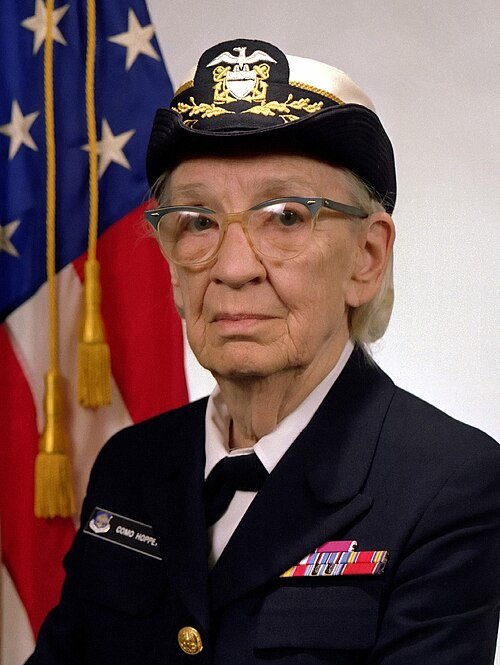

Grace Hopper changed who gets to use computers. In the 1940s, programming meant writing in strings of numbers and symbols that only a handful of specialists could read. Hopper believed that people should be able to tell a computer what to do in plain English, and she spent decades proving it could be done. Her theory of machine-independent programming languages led to FLOW-MATIC, one of the first languages to use English-like commands. It became a major influence on COBOL, a language that is still in use today.Her path to computing was anything but ordinary. A Yale-trained mathematician and Vassar professor, she joined the U.S. Navy during World War II and was assigned to the Harvard Mark I, one of the earliest large-scale computers. She later helped build the UNIVAC I, led a pioneering automatic programming department, and developed early compilers, the tools that translate human-readable code into machine instructions. Colleagues told her computers could only do arithmetic. She built the working proof that they were wrong.
She also devoted herself to the people who would come after her. Hopper spent decades teaching, mentoring, and lecturing, and she said that training young people was her proudest accomplishment besides the compiler. She served in the Navy for more than 42 years, rose to rear admiral, and received the Presidential Medal of Freedom in 2016, long after her death.
Her story is one of curiosity, stubbornness, and a conviction that technology should serve everyone. Keep reading to see how it unfolded.
Grace Brewster Murray was born in New York City on December 9, 1906, the eldest of three children. Her curiosity showed early. At age seven she took apart seven alarm clocks to find out how they worked, until her mother limited her to one. Years later she kept a clock on her wall that ran backward, a reminder to question the habit of doing things “the way we’ve always done them.” She was turned down for early admission to Vassar College at 16 but was accepted the following year, graduating in 1928 with a degree in mathematics and physics. She earned a master’s degree and then a PhD in mathematics from Yale in 1934. She went on to teach at Vassar, where she was promoted to associate professor in 1941.
When World War II began, the Navy turned Hopper away, citing her age, her weight, and the importance of her teaching job. She persisted, joined the Navy Reserve in 1943, and graduated first in her class. She was assigned to the Harvard Mark I team, where she co-authored papers on the machine and is credited with writing its operating manual. In 1947, while she worked on the Mark II, her colleagues found a moth stuck in a relay. The moth was taped into the log book, and the episode helped popularize the term “debugging.” In 1949 she joined the Eckert-Mauchly Computer Corporation and the UNIVAC team. By 1952 she had an operational compiler, though few believed in it at first. She went on to lead her company’s automatic programming department, release some of the first compiler-based languages, and help shape COBOL at the 1959 CODASYL conference. In the Navy she later directed the Programming Languages Group and led standards-testing work that brought the era’s competing language dialects closer together.
Hopper retired from the Navy in 1986 at age 79, the oldest active-duty officer in the service. She held the rank of rear admiral and received the Defense Distinguished Service Medal at a ceremony aboard the USS Constitution. She was far from finished. She joined Digital Equipment Corporation as a senior consultant and spent her remaining years lecturing widely on computing history and on making technology easier for users. Wearing her Navy dress uniform, she became a beloved speaker, known for handing out foot-long pieces of wire to show audiences how far light travels in a nanosecond. She was awarded the National Medal of Technology in 1991. Hopper died on January 1, 1992, at age 85, and was buried with full military honors at Arlington National Cemetery.
In 1982, then-Captain Hopper gave this lecture to NSA employees, and the agency released it publicly in 2024. The release has an interesting backstory. The recording and its rescue: She delivered the talk on August 19, 1982, and the NSA released a digital copy of it to the public. The delay came from the format. The lecture had been preserved on two 1-inch tapes, an obsolete medium, and the National Archives (NARA) digitized it at the NSA’s request. In mid-2024, before the recovery was announced, commentators noted that the agency couldn’t easily watch the tape, and so couldn’t review it for release. The NSA posted it on YouTube in two parts, each roughly 45 minutes, for about 90 minutes in total.
Named for the trailblazing Rear Admiral Grace Hopper, the Grace Hopper Celebration is where her pioneering spirit lives on. It is the world’s largest gathering of women and non-binary technologists, a place to learn, connect with fellow technologists, and be inspired. Whether you’re writing your first program or leading a team, come find your community and carry her legacy forward.
For more details, visit GHC 2026